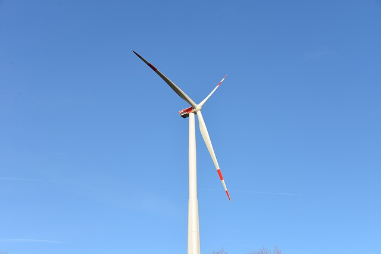
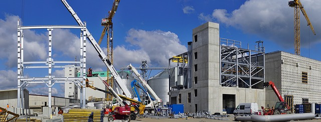
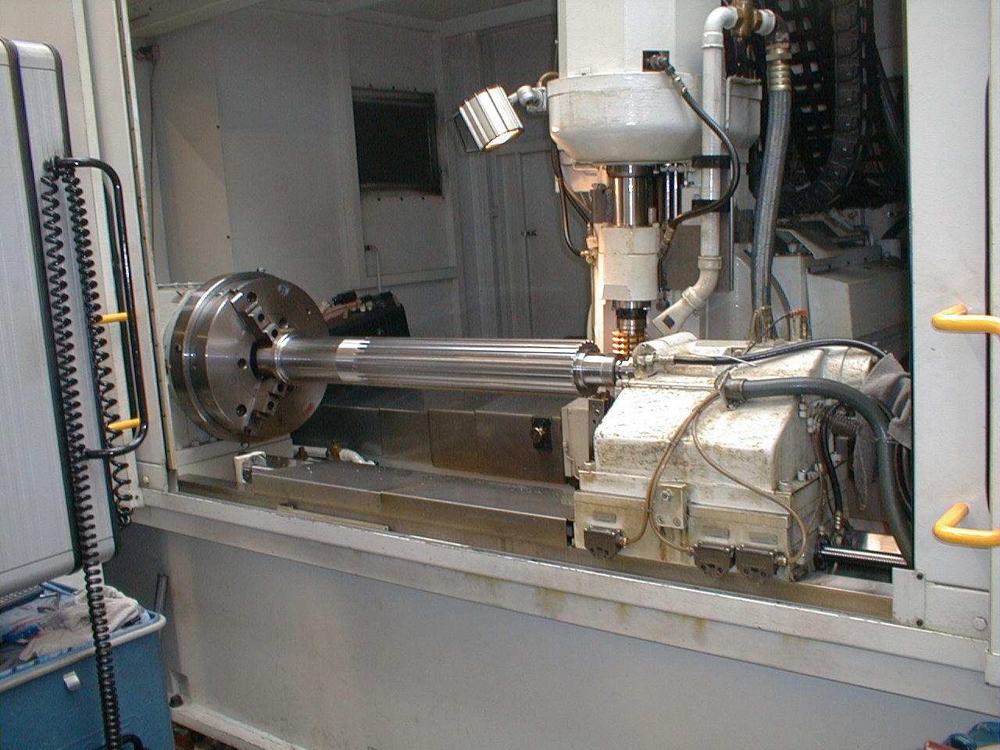
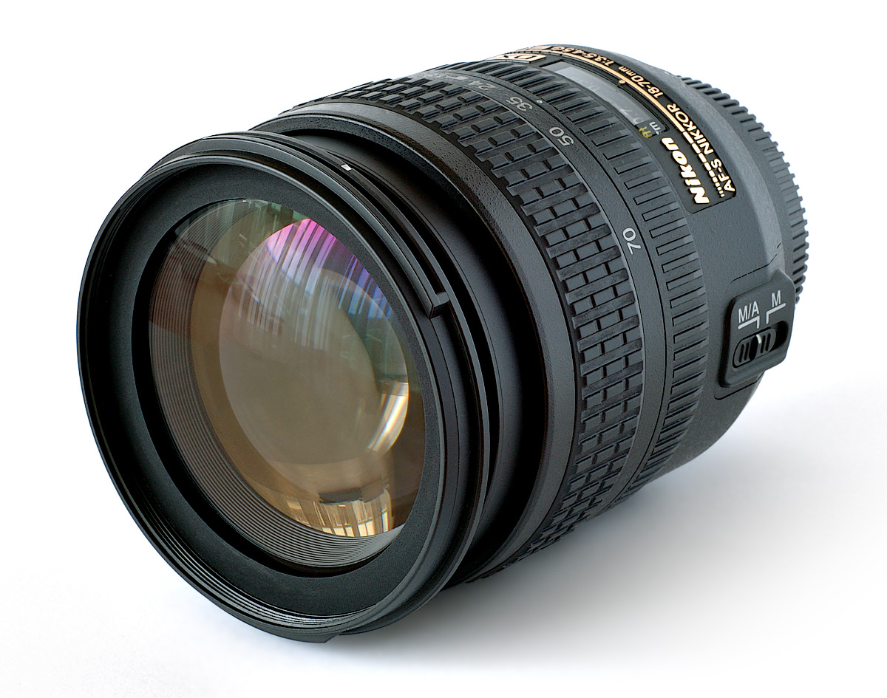
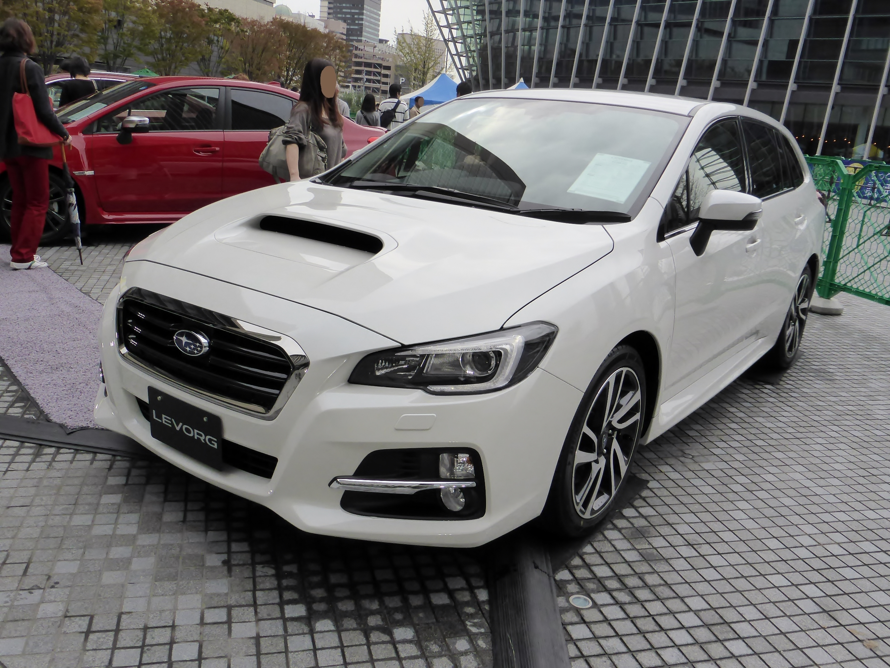

-

Technik urządzeń i systemów energetyki odnawialnej to zawód dla młodzieży zainteresowanej poznawaniem wiedzy z zakresu nowoczesnych materiałów, technologii i urządzeń stosowanych w instalacjach odnawialnych źródeł energii w krajach Europy Zachodniej, a od wielu lat wprowadzanych na rynek Polski. Energetyka odnawialna to dziedzina bardzo dynamicznie rozwijająca się w Polsce.
-
Technik informatyk to zawód dla młodzieży zainteresowanej komputerami, informatyką, tworzeniem baz danych, grafiki komputerowej. Informacja, to dziś największy kapitał, który w czasach obecnych dobrze się sprzedaje. Specjaliści od poszukiwania i przetwarzania informacji są poszukiwani na rynku pracy.
-

Technik budownictwa to zawód dla młodzieży zainteresowanej budownictwem jednorodzinnym i wielorodzinnym oraz budową budowli inżynierskich, kosztorysowaniem robót budowlanych, utrzymaniem obiektów budowlanych, wytwarzaniem materiałów i elementów budowlanych, zarządzaniem budynkami.
-

Technik mechanik to zawód dla młodzieży zainteresowanej szeroko pojętą techniką, rozwiązywaniem zadań projektowych o różnym stopniu trudności i praktyczną realizacją tych projektów, przy wykorzystywaniu nowoczesnych obrabiarek CNC w zakładach przemysłowych. Specjaliści w tej dziedzinie staną się bardzo poszukiwani na rynku pracy.
-

Fototechnik to zawód dla młodzieży zainteresowanej fototechniką, fotografowaniem, realizacją projektów multimedialnych, łączy umiejętności techniczne i wrażliwość na estetykę. Fototechnik pracę wykonuje w atelier fotograficznym, laboratorium lub w plenerze.
-

Technik pojazdów samochodowych to zawód dla młodzieży zainteresowanej szeroko pojętą techniką - naprawą i regulacją pojazdów samochodowych, kontrolą stanu technicznego pojazdów za pomocą urządzeń diagnostycznych. Specjaliści w tej dziedzinie są bardzo poszukiwani na rynku pracy w związku z trwającym od lat rozwojem motoryzacji.